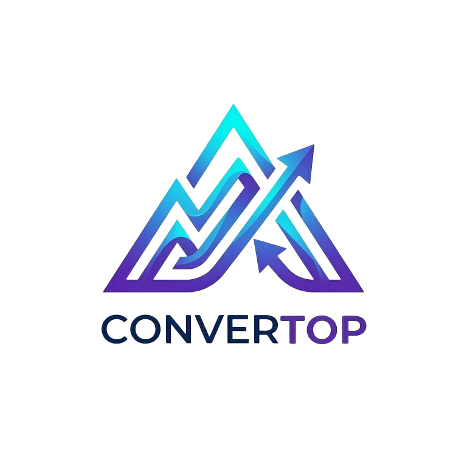

CONVERTOP – תוכנת המרת קבצים
תוכנת המרה מקצועית וקלילה: PDF ו-Word, וידאו, אודיו ותמונות – בממשק אחד.

מה זה?
התוכנה הראשונה שלי: ממיר קבצים בעברית עם ממשק נוח, שתומך בהמרת PDF ל-Word ברמה הכי גבוהה – וגם בהמרת וידאו, אודיו ותמונות.
בגרסה 2 נוסף תור המרות, כך שאפשר להמיר כמה קבצים במקביל או אחד אחרי השני, ולבחור מה יקרה בסיום (למשל לפתוח את תיקיית היעד או לכבות את המחשב).
מה יש בו
- מסמכים: PDF ⇄ DOCX עם מנוע המרה חכם
- וידאו: MP4, AVI, MKV, WEBM, GIF
- אודיו: MP3, WAV, FLAC, AAC, M4A, OGG
- תמונות: JPG, PNG, ICO
- תור המרות + בחירת כמות המרות במקביל
- פעולה בסיום: פתיחת תיקייה / כיבוי מחשב
- הורדת מנוע FFmpeg מתוך התוכנה
- חינמית לחלוטין
איך מתקינים
מורידים את התוכנה
הקובץ שוקל כ-175MB.
הורדת CONVERTOP V2מחלצים
קליק ימני על הקובץ ← חלץ הכל, ושומרים את התיקייה במקום קבוע.
מפעילים
פותחים את קובץ התוכנה שבתיקייה. אם ווינדוס מציג מסך כחול של SmartScreen – לוחצים מידע נוסף ← הפעל בכל זאת.
(להמרת וידאו ושמע) מוסיפים FFmpeg
להמרת וידאו ושמע צריך את
ffmpeg.exeבאותה תיקייה של התוכנה. אפשר להוריד אותו מתוך התוכנה עצמה, או מהאתר הרשמי ffmpeg.org. בלעדיו תופיע ההודעה "קובץ ffmpeg.exe חסר".
למפתחים שרוצים להריץ או לשנות את הקוד (Python).
מורידים את הקוד
משכפלים את המאגר בגיטהאב או מורידים אותו כ-ZIP.
מתקינים את הספריות
pip install Flask pywebview pypdf pdf2docx docx2pdf img2pdf Pillow pywin32 pyinstaller
מריצים
python app.py